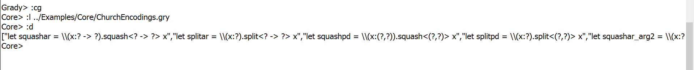
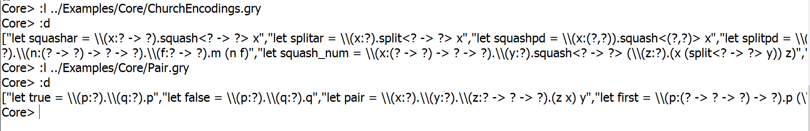

Introduction to Grady
Grady includes a Surface and Core Repl allowing users to experience the language from both a high and low level. The Repls provides typechecking and evaluation of terms with helpful error messages, helping new users become accustomed to the language syntax. We recommend that new users start with the Surface Repl as its syntax is simpler. In general, the syntax of Grady is similar to Haskell. Additionally, Grady is a highly expressive language allowing everything from programming in untyped lambda-calculus to polymorphism.
Click on any of the Grady elements below to see their description and examples. All of the elements below are found in both Repls excet split and squash, which are only found in the Core Repl.
Repls
Main Repl
By default, Grady boots up into the Main Repl. You cannot do much here except pick which of the two primary Repls you would like to work in, Surface or Core.
Commands
:help (:h)
The help command will display the help window, which displays the following three commands.
:quit (:q)
The quit command will exit out of the program.
:surface-grady (:sg)
Using this command will enter the user into the Surface Repl.
:core-grady (:cg)
Using this command will enter the user into the Surface Repl.
Core Repl
The Core Repl provides the lower level or core, view of Grady. It is quite powerful but forces stricter typing constraints on the programmer. The Core and Surface Repls are similar in functionality except that the Core Repl has an added feature. You may make free variables and store them in the context for the purpose of evaluating Church Encodings! The context is stateful memory containing the definitions that the user defines in the Repl or loads from a file. See below for the syntax on how to do this.
Commands
:help (:h)
At any time in the Repl use this command to enter into the help menu. From here you
will see a list of all commands available.
:type (:t) <term>
This command allows you to typecheck a term. If the term typechecks, the term's type is
returned. If the term does not typecheck, then the appropriate error message is returned.
:show (:s) <term>
The show command will display the abstract syntax type of the provided term.
:unfold (:u) <term>
Unfold displays your term and where appropriate substitutes terms from
the context into your term. In this way a function that is composed of several
other functions can be seen in it entirety.
:dump (:d)
The dump command will display the terms in the context. These will be displayed in the form
let <variable> = <term>
:load (:l) <filename>
You may load an external file of definitions using this command. These files are
requred to have the extention .gry. The terms are all typedchecked and then added to the context
where they are usable in the Repl. The loading is done lazily, so if you have several
definitions in your external file and the third one does not typecheck, the first two
will still be loaded into the context.
A word of caution. When loading a file into a Repl, realize that any values in the context will be overwritten by the values being loaded from the file. For instance, if you load one file into the Repl and then a second file. Only the items from the second file will be found in the context, as the items from the first file have been overwritten.
:quit (:q)
At any time in the Repl use this command to exit the Repl. If you are in either the Core or Surface Repl, you will be returned to the Main Repl. If you were in the Main Repl already, you will exit the program.
Surface Repl
The Surface Repl allows the programmer to omit type annotations in many scenarios. This makes the life of a programmer easier but obscures the detail of what is occuring at the lower level.
Commands
The commands for both the Core and Surface Repl are exactly the same.
Grady Files
Grady Files Format
Grady files follow a strict format, very similar to Haskell. Declaring a function is a two line process. On the first line you must declare the function's name, followed by a semicolon, followed by the function's type. The second line must also start with the function's name, followed by an equals sign and then the function's definition and a semicolon. For example:
true : ? -> ? -> ?
true = \(p:?)->\(q:?)->p;
Importing Grady Files
Importing a Grady file into another Grady file is easy. On the first line of your file you must use the import keyword followed by the name of the file you would like to import, followed by a semicolon.
Grady File Examples
A current list of interesting examples can be found here. You will notice that each file needs the .gry extension.
If you would like to load the examples that come with the project, follow these steps. First, load up one of the Repls, let's pick the Core Repl. So type the command :cg. Then use the load file command, :l with the file path.
You can then use the dump command, :d to verify that the contents of the file were loaded into the context.
As a note of caution, if you loaded a second file into the Repl, the information from the first is lost. See in the example below.
Numbers
Natural Number Type
Nat
Any natural number.
Successor
succ term
This returns the successor value of the given term.
Example:
succ 8
Gives the result: 9
Example:
:t \(m:Nat) -> succ m
Gives the result: Nat -> Nat
Zero
The base of natural numbers.
Natural Number Eliminator
case <expression> of 0 -> <expression>, (succ<variable name>) -> <expression>
This allows the user to case split over natural numbers.
Pairs
Pair
(<term>,<term>)
The pair type takes two terms and maintains them
as a tuple. The terms may be of different types.
Product Type
(<type>,<type>)
The product type takes two types and maintains them
as a tuple. The types may be of different.
First Projection
fst
This returns the first projection of a pair.
:t \(m:(Nat,?)) -> fst m
Gives the result: (Nat,?) -> Nat
Second Projection
snd
This returns the second projection of a pair.
:t \(m:(Nat,?)) -> fst m
Gives the result: (Nat,?) -> ?
Lists
Empty List
[]
An empty list is denoted as such.
List Type
[<term>]
In Grady you may use lists using this type, with
items in the list separated by commas. All items in the list must have the same type.
Example:
:t [9,5]
Gives the result: [Nat]
Cons
term::[term]
Cons concatenates a term of a specific type with a list of terms of the same type.
Example:
8::[9,10]
Gives the result: [8,9,10]
List Eliminator
case <expression> of [] -> <expression>, (<variable name>::<variable name>) -> <expression>
This allows the user to case split over lists.
Functions
Functions
<type> -> <type>
This type allows Grady to represent functions using an arrow. The first type represents the input's type, while the last type represents the output's type.
Example:
Nat -> Nat
This represents a function that takes in a Nat and returns a Nat
Example:
Nat -> Nat -> Nat
This represents a function that takes in two terms of type Nat and returns a term of type Nat.
Function Type
\(<variable name>:type) -> t
This represents a lambda abstration with a variable name its type and the body of the lambda expression, t.
Type Functions
\(<type variable name>:type) -> t
This represents a lambda abstration with a type variable name its type and the body of the lambda expression, t.
Application
Grady applies a argument to a function with a space in between the function and the argument.
Example:
:t \(m:Nat) -> \(f:Nat -> Nat) -> f m
Gives the result: Nat -> (Nat -> Nat) -> Nat
Type Application
[type]<expression>
This will apply the type to all type variables in the given expression.
Example:
\(m:Nat) -> ([Nat -> Nat]fix)
(\(r:Nat -> Nat) ->
\(n:Nat) -> case n of 0 -> m, (succ n') -> succ (r n'))
This is the definition for adding natural numbers.
Casting
Split
split<? -> ?>
This function takes an element of type ? can splits it into a function that
takes an element of type ? and returns an element of type ?.
Example:
:t \(m:? ) -> split<? -> ?> m
Gives the result: ? -> ? -> ?
Squash
squash<? -> ?>
Squash takes a function of type <? -> ?> and return an element of type ?
Example:
:t \(m:? -> ?) -> squash<? -> ?> m
Gives the result: (? -> ?) -> ?
Box
box<type>
Box is a function that takes the given type and inserts it into the untyped universe.
Example:
:t \(m:Nat)-> box<Nat> m
Gives the result: Nat -> ?
Unbox
unbox<term>
Unbox is a function that extracts the given type from the untyped universe.
Example:
:t \(m:?)-> unbox<Nat> m
Gives the result: ? -> Nat
Variables
Term Variable Binding
let <variable name> = <term>
Binding a type to a variable is done with a let statement. The variable persists in the context and can be viewed using the :dump command.
All bindings must typecheck.
Type Variable Binding
\(<type variable name> <: type)
This indicates that the <type variable name> is a subtype of the given type.
Free Variables
:decvar (:dv) <variable name> : type
To fully evaluate Church Encodings, one often needs a free variable. This is how they are constructed.
Example:
:dv g:Nat
Polymorphism
Forall Type
forall (<type variable name><:type).type
This allows for universal quantification.
Example:
id = \(X<:?) -> \(x:X) -> x
Gives the result: forall (X<:?).(X -> X)
Other Atomic Types
Simple
Universe of simple types
Unit Type
Unit
The terminal object.
Untyped
?
This type represents an element in the untyped universe.
Triv
Triv is the trivial program with type Unit.